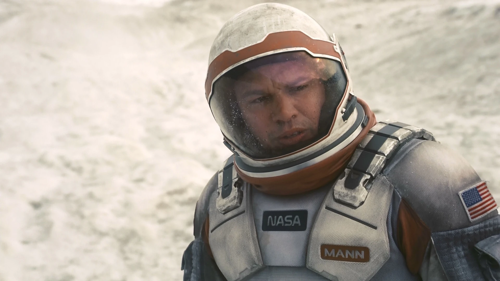

Cooper, portrayed by Matthew McConaughey, is a former NASA pilot turned farmer. He is a dedicated father and scientist who embarks on a dangerous journey through a wormhole to find a new habitable planet for humanity.
Key Traits:
Brilliant astronaut and engineer.
Unwavering determination to save humanity.
Close relationship with his daughter, Murph.
Murph
Murph, portrayed by Jessica Chastain and Mackenzie Foy, is Cooper's daughter. She plays a crucial role in solving complex equations that could save humanity. Murph's character is central to the story's emotional depth.
Key Traits:
Exceptionally intelligent and resourceful.
Determined to solve the mysteries of gravity and time.
Struggles with the absence of her father.
Dr. Amelia Brand
Dr. Amelia Brand, portrayed by Anne Hathaway, is a scientist and astronaut on the mission. She is dedicated to finding a suitable new home for humanity and wrestles with complex moral and emotional decisions.
Key Traits:
Brilliant physicist and biologist.
Strong-willed and determined to complete the mission.
Carries a personal connection to one of the planets they explore.
Dr. Mann

Dr. Mann, played by Matt Damon, is another scientist on the mission. He has a complex role in the story, and his actions have far-reaching consequences for the crew and the mission's success.
Key Traits:
Highly intelligent, but also deeply flawed.
Struggles with isolation and fear.
Makes critical decisions that affect the mission's outcome.